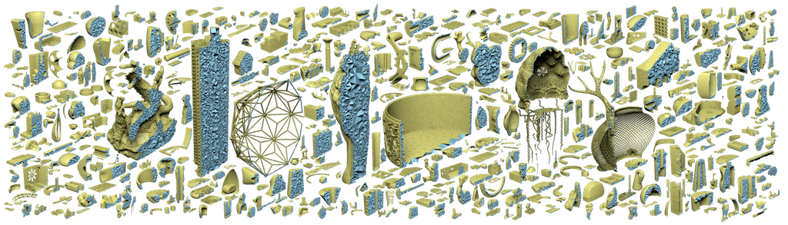
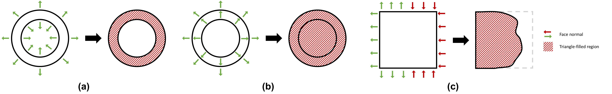

TetWild - Tetrahedral Meshing in the Wild¶

Yixin Hu, Qingnan Zhou, Xifeng Gao, Alec Jacobson, Denis Zorin, Daniele Panozzo. ACM Transactions on Graphics (SIGGRAPH 2018).Check it out 👉 https://github.com/Yixin-Hu/TetWild.
@article{Hu:2018:TMW:3197517.3201353,
author = {Hu, Yixin and Zhou, Qingnan and Gao, Xifeng and Jacobson, Alec and Zorin, Denis and Panozzo, Daniele},
title = {Tetrahedral Meshing in the Wild},
journal = {ACM Trans. Graph.},
issue_date = {August 2018},
volume = {37},
number = {4},
month = jul,
year = {2018},
issn = {0730-0301},
pages = {60:1--60:14},
articleno = {60},
numpages = {14},
url = {http://doi.acm.org/10.1145/3197517.3201353},
doi = {10.1145/3197517.3201353},
acmid = {3201353},
publisher = {ACM},
address = {New York, NY, USA},
keywords = {mesh generation, robust geometry processing, tetrahedral meshing},
}
News¶
🎉🎉🎉 We have 2D version “TetWild” - TriWild public! TriWild is able to deal with both linear and curved constriants. Now we are able to mesh curves robustly! Check it out 👉 TriWild.
Important Tips¶
💡💡💡 If you are interested in the algorithm details, please refer to our paper first. We provide plenty of examples and statistics in the paper. You can also refer to my SIGRRAPH talk slides.
💡💡💡 Check our license first.
💡💡💡 Our algorithm should be and is robust both in theory and in practice. If you do find TetWild crash (on your laptop), please test it (on cluster) with more resource given. The most complex model I tested requires >100GB memory.
💡💡💡 The orientation of input faces is as important as the position of their vertices. Our algorithm is faithful to the input face position and orientation. The winding number algorithm we are using requires reasonably consistent orientation of the input triangle mesh. If the input has a large region of faces all inverted (i.e. with flipped normal), the output tetmesh could have some parts missing or includes some elements “outside” the surface around this region, which is expected because the inverted input faces defines the “inside” as outside. We provide three 2D examples as below for easier understanding. The left in each sub-figure is input boundary with normals and the right is output triangle meshes.

Dataset¶
Here is pre-generated tetmeshes and the extracted surface meshes for research-purpose usage. Please kindly cite our paper when using our pre-generated data.
-
Input: Thingi10k
-
Output: 10k tetmeshes, 10k surface meshes
-
Figures in the paper: Input/output & scripts
Installation¶
via Docker¶
Install Docker and run Docker. Pull TetWild Docker image and run the binary:
docker pull yixinhu/tetwild docker run --rm -v "$(pwd)":/data yixinhu/tetwild [TetWild arguments]
via CMake¶
Our code was originally developed on MacOS and has been tested on Linux and Windows. We provide the commands for installing TetWild in MacOS:
- Clone the repository into your local machine:
git clone https://github.com/Yixin-Hu/TetWild
- Compile the code using cmake (default in Release mode):
cd TetWild mkdir build cd build cmake .. make
You may need to install gmp and mpfr or CGAL before compiling the code. You can install them via homebrew.
brew install gmp brew install mpfr
brew install cgal
- Check the installation:
./TetWild --help
💡 If you do not have Boost installed (which is needed for CGAL), you can enable the cmake option -DTETWILD_WITH_HUNTER=ON. This will let CMake use Hunter to download and configure Boost automatically. Other options include installing Boost via Conda, compile from source, etc.
💡 If you find Could not find Matlab or Could not find Mosek in the output of cmake, it does not matter since they are not used.
💡 We provide users an option to use ISPC for computing energy parallelly. It reduces the timimg for computing energy to 50% of the original, but it could result in more optimization iterations and more overall running time. According to our experiment on 1000 models, it reduces the overall running time by 4% in average. If you want to use ISPC, please install it first and then turn on the flag GTET_ISPC in CMakeLists.txt.
Usage¶
Input/output Format¶
The inputs of our software are triangle surface meshes in .off/.obj/.stl/.ply format.
We support .mesh/.msh format output. The default output format is .msh with minimum dihedral angle recorded as element scalar field, which can be visualized by software Gmsh. You can use PyMesh::MshLoader and PyMesh::MshSaver in pymesh/ for read and write .msh meshes.
💡 TetWild also outputs the surface of tetmesh in .obj format if the is_quiet flag is not turned on.
Features¶
Our software is quite easy to use. Basically, users only need to provide a surface triangle mesh as input and our mesher would output a tetrahedral mesh by using default settings. If you want to customize your own tetmeshes, we also provide some options.
- Envelope of size epsilon
Using smaller envelope preserves features better but also takes longer time. The default value of epsilon is b/1000, where b is the length of the diagonal of the bounding box.
- Ideal edge length
Using smaller ideal edge length gives a denser mesh but also takes longer time. The default ideal edge length is b/20
- Filtering energy
Our mesher stops optimizing the mesh when maximum energy is smaller than filtering energy. Thus, larger filtering energy means less optimization and sooner stopping. If you do not care about quality, then give a larger filtering energy would let you get the result earlier. The energy we used here is conformal AMIPS whose range is from 3 to +inf. The default filtering energy is 10.
💡 We suggest not to set filtering energy smaller than 8 for complex input.
- Maximum number of optimization passes
Our mesher stops optimizing the mesh when the maximum number of passes is reached. The default number is 80.
- Targeted number of vertices
We allow users to input the targeted number of vertices and the mesher would try its best to match that number with 5% error. When the targeted number of vertices is unrealistically small, then the output tetmesh may not have number of vertices matched.
💡 If you want a tetmesh with low resolution, please use larger envelop and larger ideal edge length.
- Sizing field
Users can provide a background tetmesh in .msh format with vertex scalar field values stored. The scalar field values is used for controlling edge length. The scalars inside an element of the background mesh are linearly interpolated.
💡 Here is an example including input surface mesh, background mesh and output tetmeshes with/without sizing control.
- Smoothing open regions
Our method can fill gaps and holes but the tetmesh faces on those parts could be bumpy. We provide users an option to do Lapacian smoothing on those faces to get a smoother surface.
- With out winding number
Please use --save-mid-result 2.
Command Line Switches¶
Our software supports usage via command line or via a C++ function wrapper. Here is an overview of all command line switches:
RobustTetMeshing
Usage: ./TetWild [OPTIONS] input [output]
Positionals:
input TEXT REQUIRED Input surface mesh INPUT in .off/.obj/.stl/.ply format. (string, required)
output TEXT Output tetmesh OUTPUT in .msh format. (string, optional, default: input_file+postfix+'.msh')
Options:
-h,--help Print this help message and exit
--input TEXT REQUIRED Input surface mesh INPUT in .off/.obj/.stl/.ply format. (string, required)
--output TEXT Output tetmesh OUTPUT in .msh format. (string, optional, default: input_file+postfix+'.msh')
--postfix TEXT Postfix P for output files. (string, optional, default: '_')
-l,--ideal-edge-length FLOAT
ideal_edge_length = diag_of_bbox * L. (double, optional, default: 0.05)
-e,--epsilon FLOAT epsilon = diag_of_bbox * EPS. (double, optional, default: 1e-3)
--stage INT Run pipeline in stage STAGE. (integer, optional, default: 1)
--filter-energy FLOAT Stop mesh improvement when the maximum energy is smaller than ENERGY. (double, optional, default: 10)
--max-pass INT Do PASS mesh improvement passes in maximum. (integer, optional, default: 80)
--is-laplacian Do Laplacian smoothing for the surface of output on the holes of input (optional)
--targeted-num-v INT Output tetmesh that contains TV vertices. (integer, optional, tolerance: 5%)
--bg-mesh TEXT Background tetmesh BGMESH in .msh format for applying sizing field. (string, optional)
--save-mid-result 0: save result before optimization, 1: save mid-results during optimization, 2: save result without winding number.
-q,--is-quiet Mute console output. (optional)
--log TEXT Log info to given file.
--level INT Log level (0 = most verbose, 6 = off).
Function Wrapper¶
💡 We use libigl to read the input triangle mesh. If you encounter any issue loading your mesh with libigl, please open a ticket there. Alternatively, you could load the mesh yourself and use our function wrapper to pass the raw data directly to TetWild.
We provide a wrapper for TetWild in tetwild.h, allowing users do the tetrahedaliztion without read/write data from/to files. One can use it in the following way:
- Include the header file
#include <tetwild/tetwild.h>. -
Set parameters through a struct variable
tetwild::Args args. The following table provides the correspondence between parameters and command line switches.Switch Parameter –input N/A –postfix args.postfix–output N/A –ideal-edge-length args.initial_edge_len_rel–epsilon args.eps_rel–stage args.stage–filter-energy args.filter_energy_thres–max-pass args.max_num_passes–is-quiet args.is_quiet–targeted-num-v args.target_num_vertices–bg-mesh args.background_mesh–is-laplacian args.smooth_open_boundary -
Call function
tetwild::tetrahedralization(v_in, f_in, v_out, t_out, a_out, args). The input/output arguments are described in the function docstring, and use libigl-style matrices for representing a mesh.
License¶
TetWild is MPL2 licensed. But it contains CGAL code under GPL license.
TetWild is free for both commercial and non-commercial usage. However, you have to cite our work in your paper or put a reference of TetWild in your software. Whenever you fix bugs or make some improvement of TetWild, you should contribute back.
Acknowledgements¶
We used several useful libraries in our implement, testing, and rendering listed as follows. We would like to especially thank their authors for their great work and publishing the code.